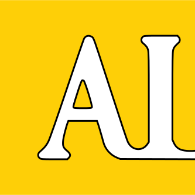
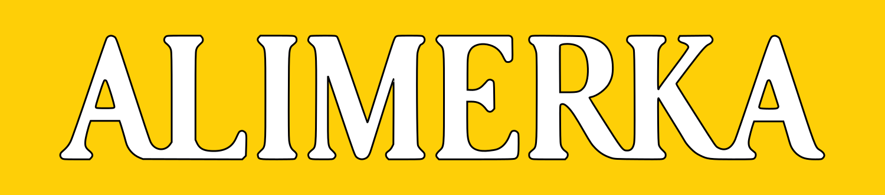

Languages
- SQL
- R
Full-time at Alimerka, Asturias
Artificial Intelligence Technician at Alimerka, full-time
I’m Alberto Rivas. I analyse how automation really runs across a company, find the bottlenecks where work waits, and turn them into shorter operational times and a more profitable business.
Illustrative terminal output: workflows are mapped, a bottleneck is detected, and an optimisation is proposed.
From raw data to models in production. Tools with a cyan outline are used in my projects: select one to see where.
Where I’ve applied data and automation to real operations.

to present
Full-time
Alimerka, Asturias, Spain. Full-time position.
I analyse and audit the automation processes running across the entire company, mapping how work really moves and where it stalls. By pinpointing bottlenecks, I cut operational times, streamline workflows and lift the profitability of the whole business.
to
COFAS, Asturias, Spain
Applied advanced combinatorial optimisation to a real Travelling Salesman Problem in a logistics context. Designed and implemented algorithms that reduced routing complexity and processing overhead, turning theoretical models into measurable operational improvements.
Each one is measured by the result it produced, not only the stack behind it.
Showing projects that use
A dashboard exploring the acoustic landscape of Spotify’s top-streamed songs of 2023. It reduces the audio features with t-SNE, lets you lasso a region to get on-demand statistics, and keeps three views in sync: a scatter plot, a radar chart and a correlation heatmap.
A three-layer behavioural biometric framework that turns the login box into a sensor. It detects bots, estimates age and verifies identity from keystroke timing, and includes a live demo that captures real users.
One ConvNeXt-Tiny backbone with two heads tells whether an image is a real photograph or AI-generated, and which alteration was applied. Training both tasks together matched single-task authenticity and beat the single-task transform ceiling by 3.5 points.
Designed and deployed a preventative-health AI agent during the competition. It turns self-reported data into actionable insights, addressing the economic and logistical barriers to medical access.
No projects match this filter. Choose another category or clear the tool filter.
The academic base and the certificates behind it.
2022 to present
Universidad de Oviedo, Asturias
Statistical modelling, big-data infrastructure, machine learning and software engineering, with an MLOps track covering CI/CD for ML, model registries, feature stores and production monitoring.
2025 to 2026
Sapienza University of Rome, Italy
Master-level modules in cybersecurity and advanced computer science: network security architectures, applied cryptography and secure systems design.
Cisco Networking Academy
CertificateUniversidad de Oviedo
CertificateOnline certification
CertificateCisco Networking Academy
CertificateA collaboration, an opportunity or a question: reach out directly, or copy any link below.